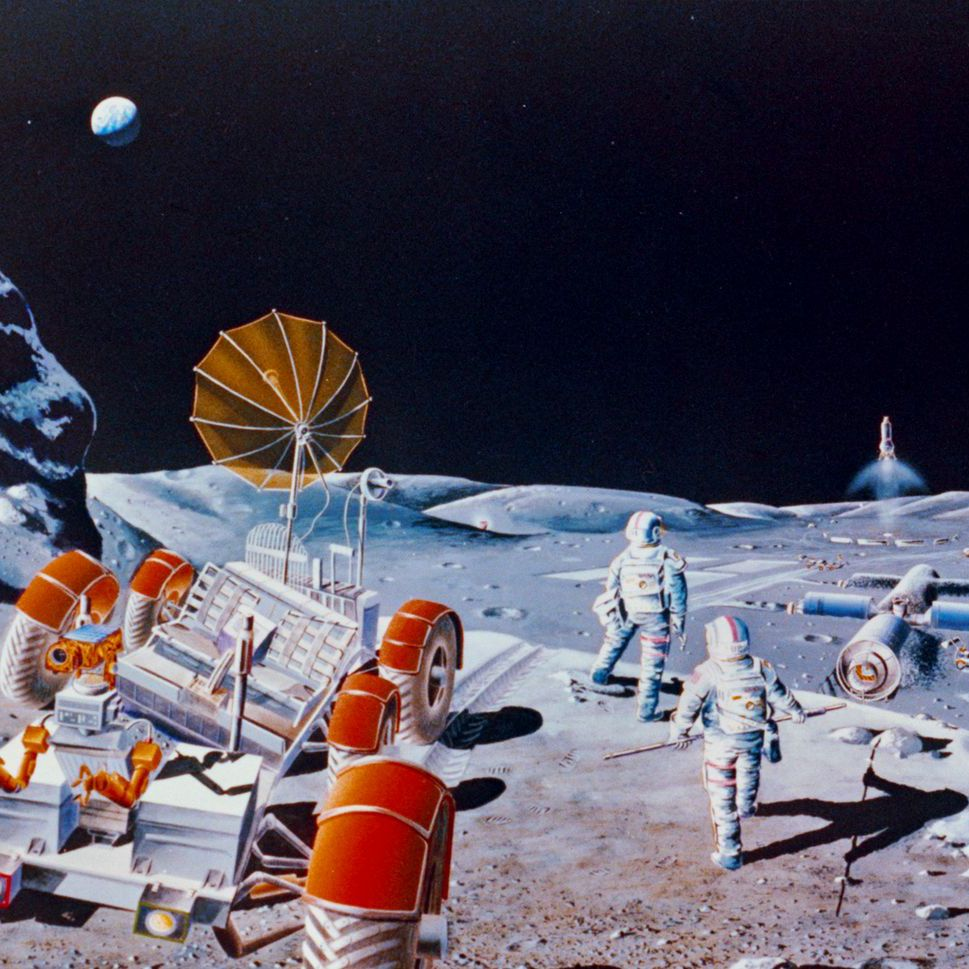

Space in 2050
Future in 2050 for Space
Human in Space
NASA has been set the ambitious goal of returning humans to the Moon by 2024 and establishing a sustainable human presence on the Moon by 2028.
The US space agency is working with a number of international and commercial partners, including the European Space Agency, in order to achieve this.

China's Artificial Sun
China’s nuclear fusion reactor has made headlines this month after producing an ‘artificial sun’ that was five times hotter than the real thing.
The device broke world records after sustaining a nuclear reaction at 70 million degrees Celsius (158 million degrees Fahrenheit) for more than 17 minutes,It is in fact a donut-shaped reactor chamber where heated-up plasma is trapped with a powerful magnetic field.
The goal of this ‘sun’ is not to supply light or heat, but instead an enormous amount of clean energy that researchers hope to harvest to power cities.
EAST gets its nickname 'artificial sun’ because this process of energy-generation, known as nuclear fusion, replicates the sun's physics.
The process uses atomic nuclei to generate large amounts of energy into electricity, by merging hydrogen atoms to create helium.
Go Back